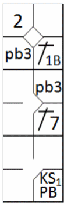
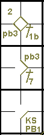

La balle se loge dans le masque ou l'équipement de l'arbitre ou du receveur.
Le jeu est arrêté (la balle est morte) et les coureurs avancent d’une base ou retournent à leurs
bases sans pouvoir être retirés quand … Un lancer se loge dans le masque ou l’équipement du receveur ou dans ou contre le
corps de l’arbitre, son masque ou son équipement et demeure hors-jeu, les coureurs avancent d’une base
[OBR 5.06(c)(7)].
La même règle stipule que si le lancer est la troisième prise avec deux retraits ou la quatrième balle,
le frappeur obtient également la première base. S'il y a moins de deux retraits et que le lancer est la troisième prise, le
frappeur est retiré.
Exemple 108:
Avec les première et deuxième bases occupées, et une balle et une prise pour le frappeur, le lancer fou se loge dans
le masque du receveur, et les coureurs avancent d'une base tandis que le frappeur reste dans la boîte pour terminer son tour.
Il obtient une balle ou une prise selon la décision de l'arbitre. Ces actions sont notées « Wild pitch ».

|
action {
batter -> HP
}
action {
batter -> 1B7
,
runner1 -> +
}
action {
runner1 -> wp
,
runner2 -> WP
}
|

|
Il est également possible que la balle se loge dans le masque du receveur après une balle passée ; dans ce
cas, utilisez le symbole de la balle passée.
Exemple 109:
Avec deux retraits, les troisième et première bases occupées, deux balles et deux prises au frappeur.
La balle lancée, qu'il s'agisse d'un lancer fou ou d'une balle passée, se loge dans les vêtements de l'arbitre et
est appelée la troisième prise.
Le frappeur obtient donc la première base et les coureurs avancent d'une base. Utilisez le symbole de pointage
approprié en cas de lancer fou ou de balle passée.
|

|
action {
batter -> 1B1b
}
action {
batter -> 1B7
,
runner1 -> ++
}
action {
batter -> KSPB
,
runner1 -> pb
,
runner3 -> pb
}
|

|
ATTENTION: Lorsque le lancer en question est jugé comme étant la quatrième balle, le frappeur
obtient un 'base on ball' normal. Par conséquent, toute avancée forcée d'un coureur est considérée comme une conséquence de ce
'base on ball'.
Exemple 110:
Avec les première et troisième bases occupées et le compte à trois balles et une prise, la balle se loge dans les
vêtements de l'arbitre suite à un lancer fou ou une balle passée. Dans ce cas, le lancer est considéré comme la quatrième
balle et le frappeur obtient la première base.
L'avance du coureur en troisième base est enregistrée avec « WP » ou « PB » car il n'a pas été forcé et le frappeur
était troisième dans l'ordre de frappe.
Le coureur en première base, qui aurait de toute façon avancé en deuxième base à la suite du 'base on ball', est
marqué du numéro de l'ordre de frappe du frappeur, puisqu'il s'agit d'une avance forcée normale.

|
action {
batter -> 1B1
}
action {
batter -> 1B8
,
runner1 -> + e8
}
action {
batter -> BB
,
runner1 -> +
,
runner3 -> WP
}
|

|